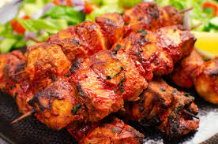

Tandoori Kabab
Ingredients:
- 500g boneless chicken pieces (you can use other meats or paneer for variations)
- 1 cup plain yogurt
- 2 tablespoons ginger-garlic paste
- 1 tablespoon lemon juice
- 2 teaspoons red chili powder
- 1 teaspoon turmeric powder
- 2 teaspoons garam masala
- 1 tablespoon cumin powder
- 1 tablespoon coriander powder
- Salt to taste
- 2 tablespoons vegetable oil
- Skewers (wooden or metal)
Instructions:
1. In a large mixing bowl, combine yogurt, ginger-garlic paste, lemon juice, red chili powder, turmeric, garam masala, cumin powder, coriander powder, salt, and vegetable oil.
2. Mix the marinade thoroughly to create a smooth and well-mixed paste.
3. Add the chicken pieces to the marinade and ensure they are evenly coated. Marinate the chicken for at least 2-4 hours or overnight for the best flavor.
4. If you're using wooden skewers, soak them in water for about 30 minutes to prevent them from burning during grilling.
5. Preheat your tandoor, grill, or oven to a high temperature.
6. Thread the marinated chicken pieces onto skewers, leaving some space between each piece.
7. Grill the chicken skewers in the tandoor or oven for about 15-20 minutes, turning them occasionally, until the chicken is cooked and has a charred, smoky appearance.
8. Serve the hot Tandoori Kebabs with mint chutney, naan, or flatbread.
Tandoori Kebabs are a classic Indian dish known for their smoky, spicy, and tangy flavors.Enjoy!